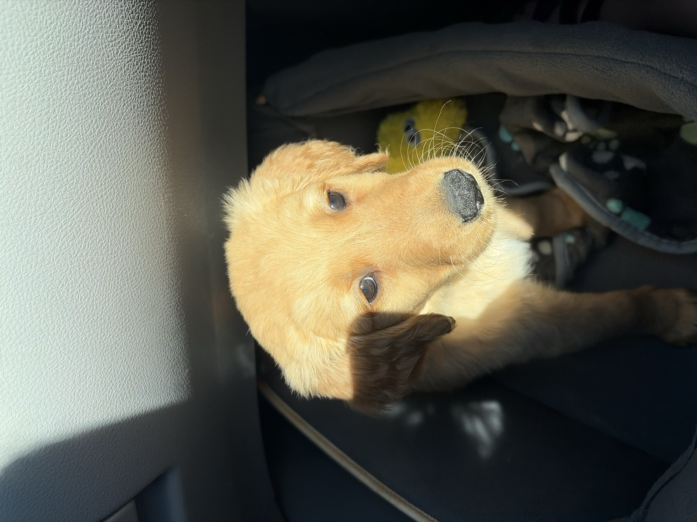

The staircase
Train step by step. If Marley struggles, make the rep easier: less distance, less duration, fewer distractions. Win small, then build back up.

Crowned K9s Find My Puppy · Service Dog Prospect
Your guide to living with Marley: clear communication, proactive potty structure, calm authority, and the foundation that supports her service-dog prospect development.
Service dog prospect · Private family playbook

Lead with Confidence, Train with Crowned K9s.
Know your pup
Marley is very responsive to "Ant ant". Use it once with calm authority, then immediately guide her into the right behavior. Do not repeat it or escalate emotionally.
Your daily structure
When in doubt, take Marley out. Do not wait for her to tell you.
Marley is so quiet in her crate that she will not make a noise even if she needs to potty. She also does not mind sitting in her pee or stepping on her poop. You cannot rely on whining as a signal.
Your rule: let her outside after every trigger, and especially before she wakes up and stands up. If you wait until she is already standing, you may look over and find her standing in her pee.
Wake her for potty before she stands on her own. Honor every trigger. Last potty before rest. First potty after rest.
Inside means go into her crate for naps, safe breaks, and calm downtime. The crate supports her service foundation, not just house training.
At her potty spot, say Hurry Up once. Stay neutral until she goes, then mark Yes and pay big.
Communication
Marley responds best to calm, authoritative communication. Clear words and consistent follow-through help her feel secure.
Use Yes to mark the exact moment she gets it right, then reward. Example: her bottom hits the floor on Sit -> Yes -> food, praise, touch, or access.
Use Good to tell her to keep holding the behavior. This is useful for Place, Down, and calm greetings.
Free is her release word. After Sit, Down, Place, Wait, or Inside, she should wait for Free before getting up, bolting through a door, or diving at the food bowl.
Ant ant is her correction/interrupter and she responds to it very well. Say it once with calm authority, then guide her back to Place, reset the doorway, or ask for a known command.
How she was taught
Marley was not just taught words; she was taught a system. These concepts are the homework that keeps her training from fading once she is home.
Train step by step. If Marley struggles, make the rep easier: less distance, less duration, fewer distractions. Win small, then build back up.
Keep reps short (often 1-2 minutes). End on a success while she is still engaged—leave her wanting more.
Use Yes, Good, and Free daily. Avoid extra talking during commands.
A rep counts when you release her with Free. Reset calmly if she self-releases.
Lead with calm confidence. Marley is sensitive and responds well to fair, steady leadership.
Do not wait for a signal. Take her out on schedule, especially before she stands up in the crate.
What she knows
Marley knows these behaviors. Your job is to help her learn that your voice, timing, and house rules mean the same thing. Duration behaviors end with Free when you are finished holding the position.
Means
Look at me / check in.
Your practice
Say her name once. When she looks, mark with Yes and reward. Her name should mean attention, not background noise.
Means
Bottom on the floor; a polite default before food, doors, and greetings.
Your practice
Ask for Sit before attention and meals. If you are holding the sit, release with Free when you are done.
Means
Lie down and settle her body.
Your practice
Use short reps first. Mark with Yes, build duration with Good, then release with Free.
Means
Go to her bed/mat and stay there until Free.
Your practice
Use Place during meals, guests, TV time, and whenever she needs an off switch.
Home life cues
Means
Go into her crate.
Your practice
Use it for naps, bedtime, and safe management. Release with Free when you are ready for her to come out calmly.
Means
Pause - do not move through the threshold or toward the food until Free.
Your practice
Use Wait at meals, exterior doors, gates, and car doors.
Means
Potty outside - now.
Your practice
Say Hurry Up at her potty spot; stay boring until she goes, then Yes and a real payoff.
Means
Move toward you and check in.
Your practice
Call Come when she is likely to succeed, then reward generously. Keep early reps short and low-distraction so recall stays reliable.
Means
At night, relax again and settle back down.
Your practice
Keep it boring and consistent. Say Go to sleep, reduce attention, and give her the chance to settle.
House manners
Marley does best when you are calm, clear, and consistent. Sweet praise for good choices, fair correction for unwanted ones, and no emotional nagging.
Practice Wait at thresholds and release with Free. Impulse control at doors supports both house manners and future public access work.
Use Place and Inside during busy home life so Marley learns how to settle around movement, guests, and changing environments.
Welcome home
Marley has an excellent temperament and a strong foundation. Your job now is to protect structure, communication, and proactive potty rhythm so she can keep growing into the service prospect we believe she can become.
Lead with Confidence, Train with Crowned K9s.
Text: 919-816-2426 · lorenzo@crownedk9s.com · crownedk9s.com